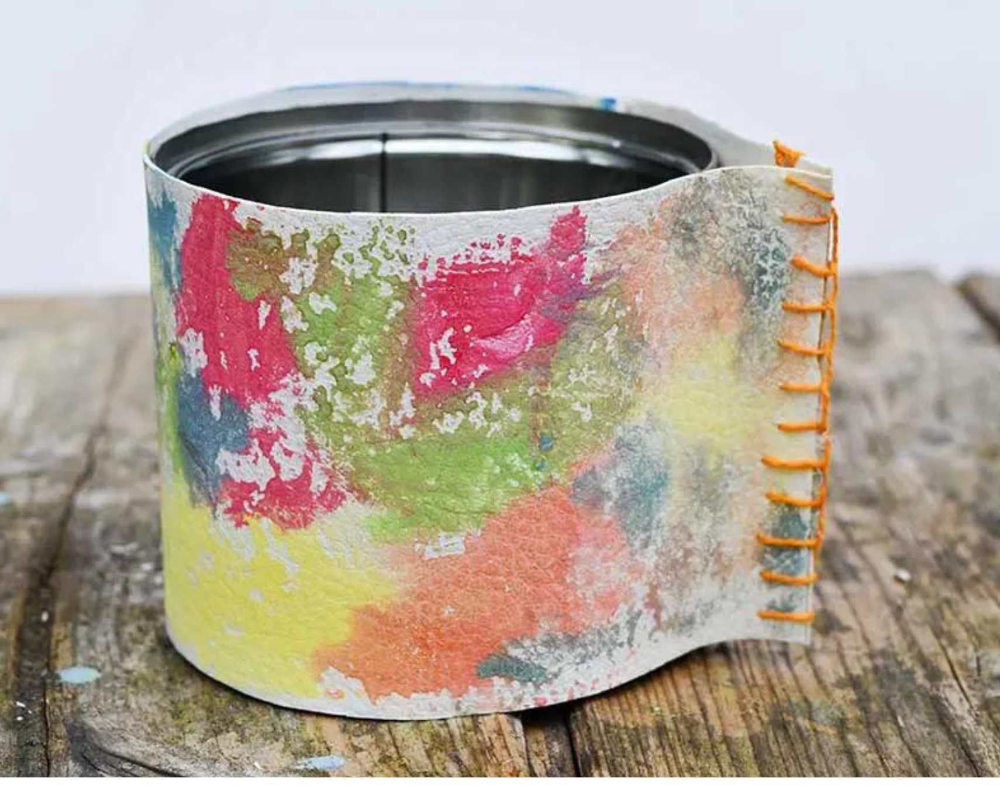

Have no use for your old leather bag? Rather than throwing it, here is a great DIY that will make good use of your old leather bag. The Rainbow leather pot is a simple yet affordable craft that uses mainly upcycled materials. Not only are you recycling but it makes your plants look aesthetically pleasing. So what are you waiting for? this craft will surely help your garden!